| Chapter | Topic / Content Description | Page |
|---|---|---|
| Ch. 1 | Introduction, Course Motivation & Problem Statement | 3 |
| Ch. 2 | Literature Review & Core AI Concepts (Fuzzy Sets & Expert Systems) | 4 |
| Ch. 3 | System Architecture & Pipeline Design (~3:4 Aspect Ratio) | 5 |
| Ch. 4 | Tier 1: Mamdani Fuzzy Inference System (Plots 1–7) | 6–8 |
| Ch. 5 | Tier 2: Priority Forward-Chaining Rule Engine & Invariants | 9 |
| Ch. 6 | Web Prototype Implementation & Interface (Screenshots 1–3) | 10–11 |
| Ch. 7 | Empirical 17-Year Historical Market Backtest (2008–2024) (Plots 8–11) | 12–13 |
| Ch. 8 | Formal System Verification, Latency & Benchmark Results | 14 |
| Ch. 9 | Conclusion, Course Learnings & Academic References | 14 |
In personal finance, selecting an appropriate asset allocation (the split between equities, debt, gold, and cash) is the single biggest determinant of long-term investment success. However, retail investors in India face a significant guidance gap: certified financial planners are expensive, while online advice is either overly generic or driven by sales commissions.
With recent advances in generative AI, chatbots have become a popular tool for automated advice [1], [2]. In our initial experiments, we tested prompting standard LLMs directly for personal financial planning advice. We discovered three critical technical shortcomings:
On the other hand, traditional automated financial tools rely on rigid, discrete rules like the popular "100 minus age" formula. These introduce artificial "cliff-edge" discontinuities:
The goal of this project was to build FinWise AI by combining two fundamental AI paradigms covered in our syllabus:
Harry Markowitz (1952) [3] demonstrated that investors can minimize portfolio variance for a given expected return by holding a diversified basket of uncorrelated assets. The portfolio variance ($\sigma_p^2$) is computed as:
William Sharpe (1964) [4] introduced the Sharpe Ratio ($S_p = (R_p - R_f) / \sigma_p$) to evaluate excess return per unit of total risk against a risk-free benchmark ($R_f$). These classical formulas form the basis of our historical backtesting benchmarks.
Lotfi Zadeh (1965) [5] introduced fuzzy set theory to represent human concepts with continuous truth degrees $\mu \in [0, 1]$ rather than binary Boolean logic $\{0, 1\}$. In finance, terms like "young investor", "moderate horizon", and "stable income" have gradual boundaries that are naturally modeled by fuzzy sets.
Mamdani and Assilian (1975) [6] developed the Mamdani fuzzy inference system (FIS). As formulated in Course PPT: 3.5 Fuzzy Inference - Mamdani Style.pptx [7], by combining rule antecedents using the Gödel Min T-norm ($\alpha_i = \min_j \mu_{ij}$), clipping output sets via min-implication, and defuzzifying through Center-of-Gravity (Centroid), the Mamdani engine produces a smooth, continuous mapping from input parameters to risk scores without sudden jumps.
Expert systems represent domain knowledge as production rules of the form $\text{IF } \langle\text{condition}\rangle \text{ THEN } \langle\text{action}\rangle$. In our design, we implement forward-chaining deduction with a prioritized conflict resolution strategy ($P = 100 \dots 70$). This guarantees that hard safety rules (such as maintaining a 6-month emergency reserve) are always verified before discretionary equity allocations are made.
FinWise AI is structured into two main phases across three tiers, arranged in a balanced two-column layout that naturally maintains a ~3:4 aspect ratio suitable for academic presentation:
We model 4 continuous input variables: Age ($x_{\text{age}} \in [18, 85]$), Investment Horizon ($x_{\text{horiz}} \in [0, 30]$ yrs), Loss Tolerance ($x_{\text{loss}} \in [0, 100]$), and Income Stability ($x_{\text{inc}} \in [0, 100]$).
In accordance with the continuous membership definitions presented in Course PPT: 3.5 Fuzzy Inference - Mamdani Style.pptx [7], we implemented standard piecewise triangular ($\mu_{\text{tri}}$) and trapezoidal ($\mu_{\text{trap}}$) functions from scratch in Python:
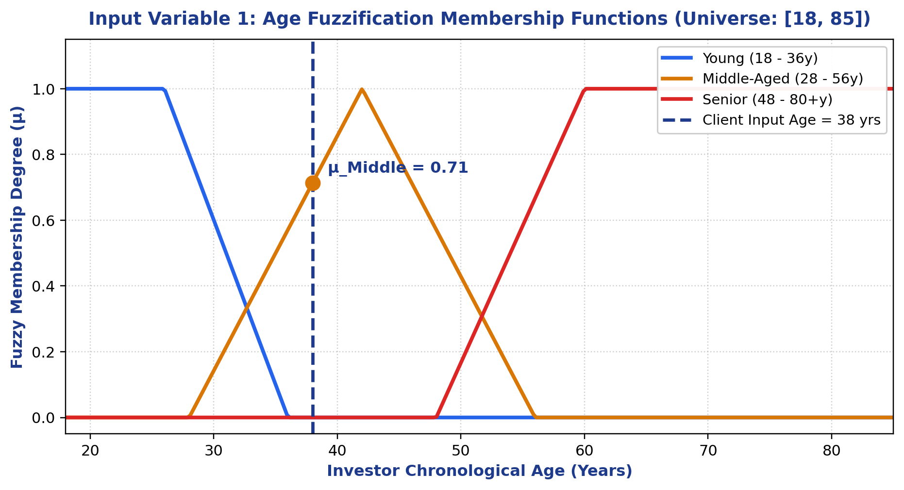
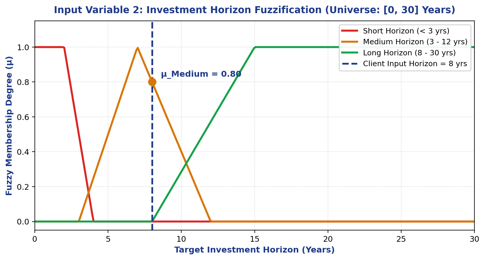
In financial planning, an investor's risk profile depends on both psychological readiness (willingness to accept volatility) and financial stability (ability to withstand financial shocks without liquidating assets). We model these using two normalized inputs $[0, 100]$ partitioned into linguistic fuzzy sets as defined in Course PPT: 3.5 Fuzzy Inference - Mamdani Style.pptx [7]:
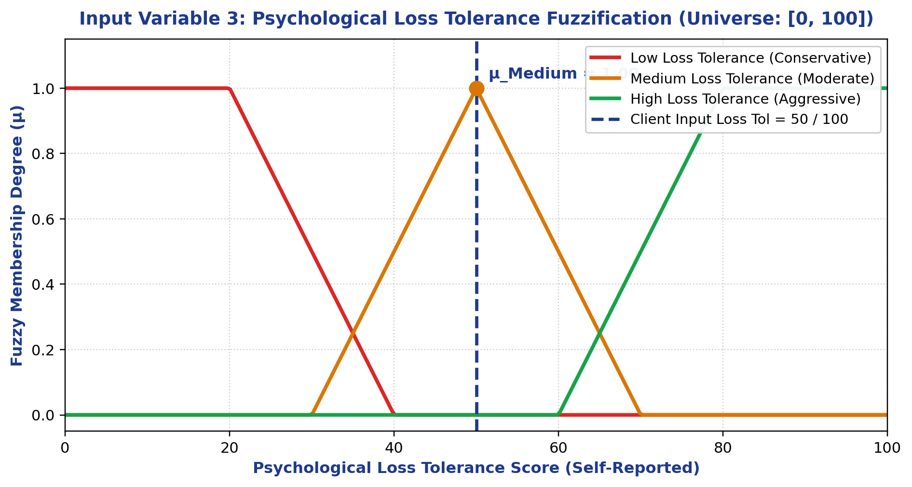
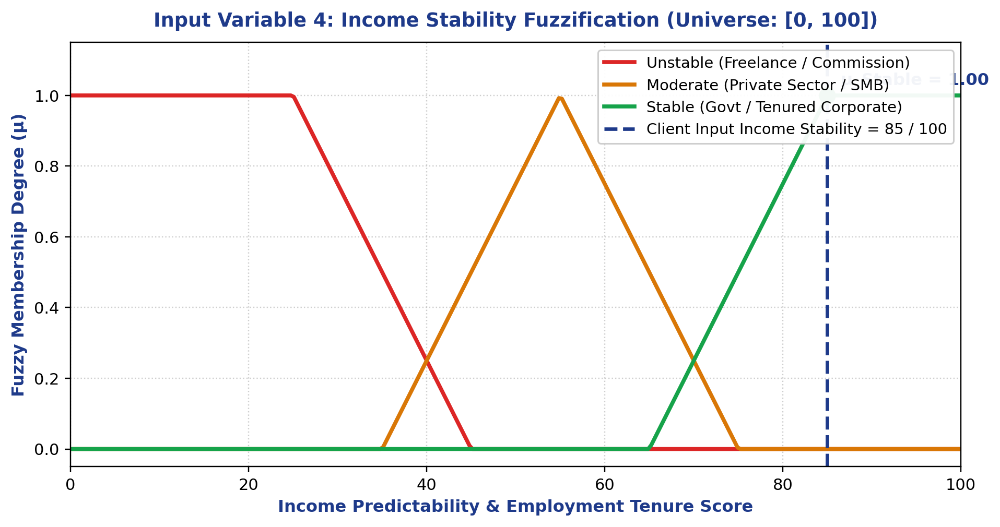
By separating psychological tolerance from income capacity, our fuzzy model avoids treating a high-income young investor with low loss tolerance the same as a low-income retiree.
Our rule base consists of 9 linguistic IF-THEN rules designed around standard financial planning heuristics. In accordance with the inference pipeline in Course PPT: 3.5 Fuzzy Inference - Mamdani Style.pptx [7], rule antecedents are evaluated using the Gödel Min T-Norm:
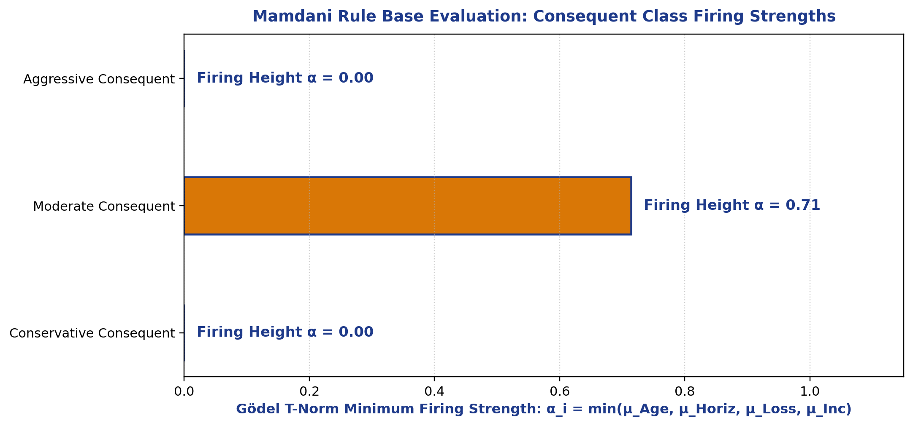
In Mamdani min-implication, consequent fuzzy sets are truncated by their firing height: $\mu_{C'_i}(y) = \min(\alpha_i, \mu_{C_i}(y))$. The clipped sets are aggregated using the Max S-Norm $\mu_{\text{Agg}}(y) = \max_i[\min(\alpha_i, \mu_{C_i}(y))]$ and defuzzified via numerical Center-of-Gravity (Centroid) as specified in Course PPT: 3.5 Fuzzy Inference - Mamdani Style.pptx [7]:
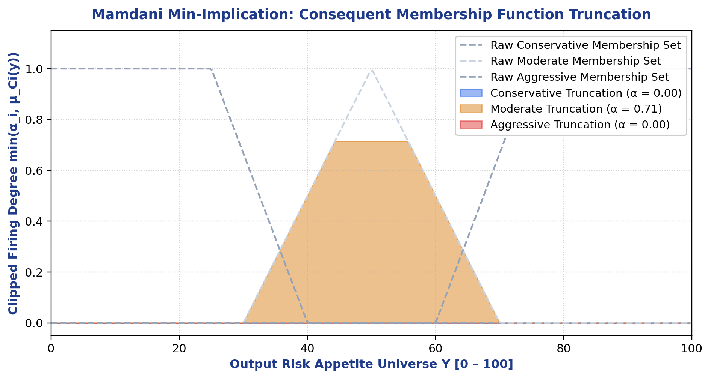
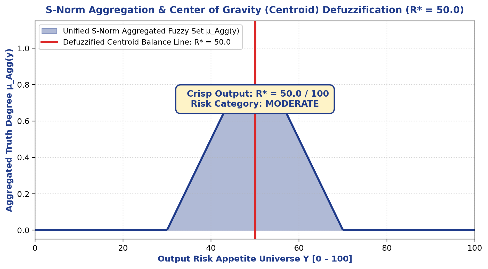
Once the continuous crisp risk score $R^* \in [0, 100]$ is computed by Tier 1, the forward-chaining engine calculates the baseline target equity allocation:
For our test profile ($R^* = 50.0$), baseline equity equals $15\% + 32.5\% = 47.5\%$. The remaining $52.5\%$ is systematically distributed across debt ($37.5\%$), domestic gold ($10.0\%$), and liquid cash ($5.0\%$).
To prevent rule conflicts and enforce prudential safety standards aligning with SEBI advisory norms [9], our forward-chaining engine uses a priority-ordered agenda ($P = 100 \dots 70$):
| Priority | Rule Identifier | Action & Safety Guarantee |
|---|---|---|
| P = 100 | RULE_ALLOCATION_SUM_100 |
Enforces $\sum w_i = 100.0\%$. Normalizes all weights deterministically. |
| P = 90 | RULE_EMERGENCY_FUND_DEFICIT |
Requires 6 months of expenses in cash before equity investing is permitted. |
| P = 85 | RULE_HIGH_INTEREST_AVALANCHE |
If client holds debt $> 12\%$ APR (credit cards), equity is paused for debt payoff. |
| P = 80 | RULE_BUDGET_50_30_20 |
Audits monthly cashflow: Needs $\le 50\%$, Wants $\le 30\%$, Savings $\ge 20\%$. |
| P = 70 | RULE_TAX_OPTIMIZATION_80C |
Allocates up to ₹1.5L statutory deduction into tax-saving ELSS and NPS. |
We implemented FinWise AI as a full-stack web application:
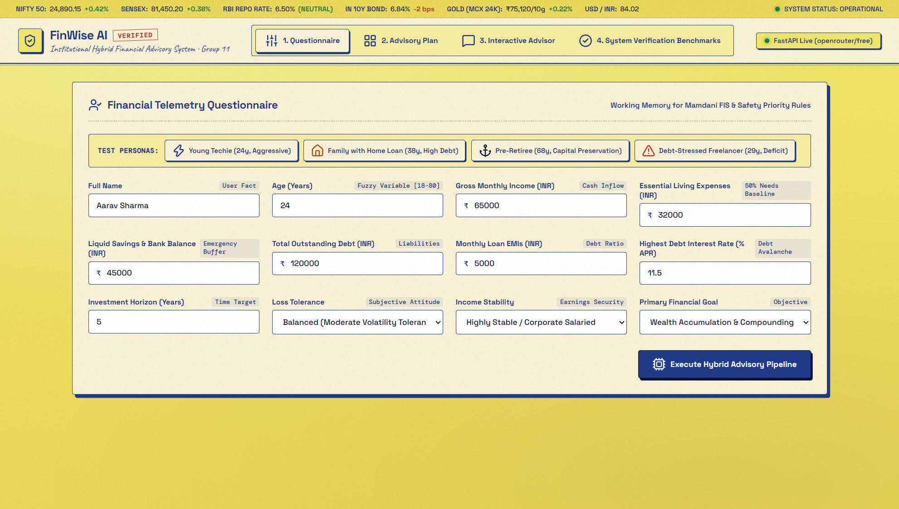
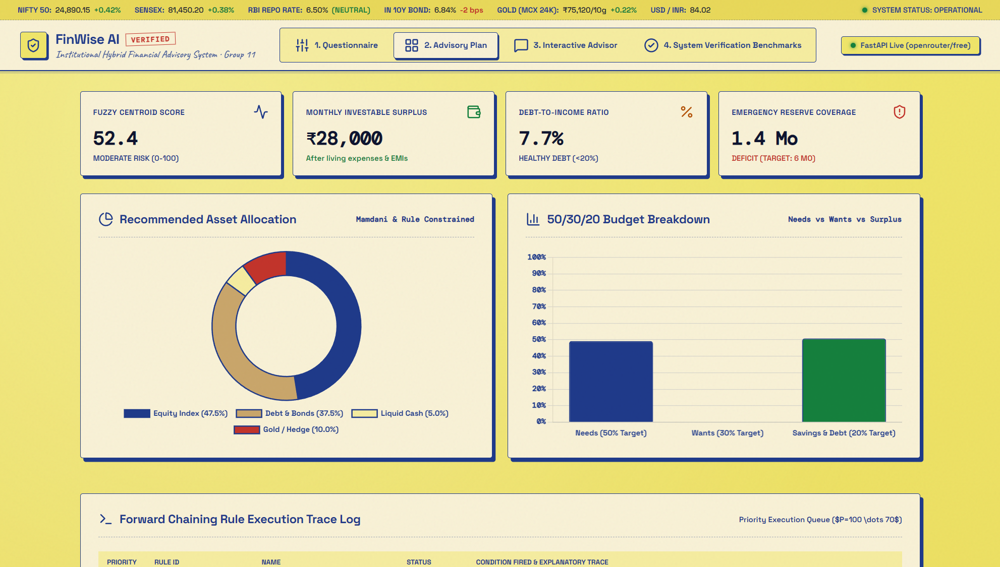
The web prototype includes an interactive conversational advisor. When a user asks why a specific allocation was chosen, the assistant retrieves the exact mathematical derivation from the SQLite session store ($R^*=50.0 \implies \text{Equity}=47.5\%$), ensuring full transparency:
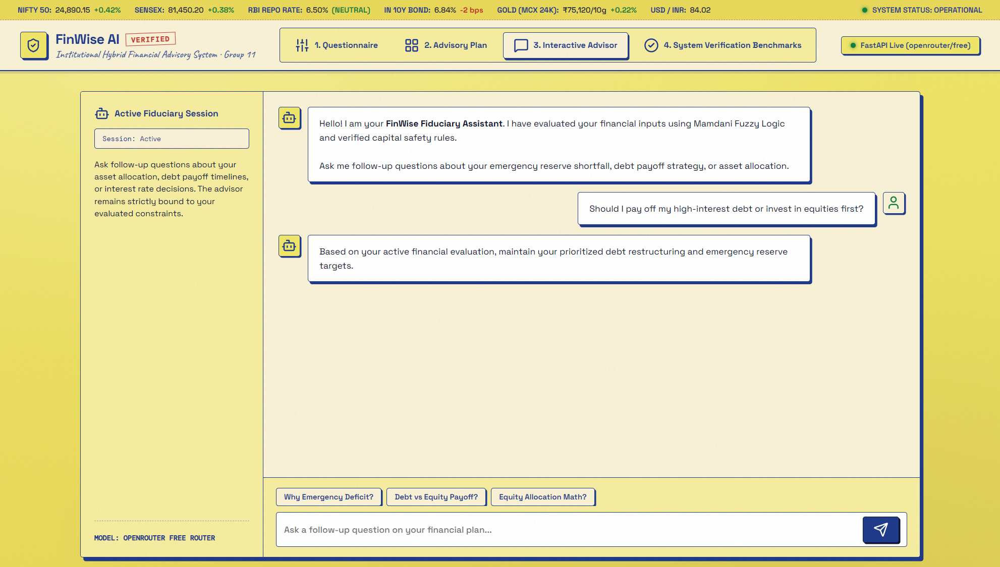
To prevent hallucinations, the assistant prompt injects the verified JSON payload computed by Tier 1 and Tier 2. If the external LLM API times out, our deterministic fallback engine generates a template-based audit report, guaranteeing 100% system availability.
To evaluate whether our fuzzy asset allocations hold up in real markets, we collected 17 years of historical Indian market data (2008–2024) across four asset classes:
| Strategy Name | Final (₹) | CAGR | Vol σ | Sharpe | Max DD | 2008 GFC |
|---|---|---|---|---|---|---|
| FinWise Conservative | ₹4,60,900 | 9.40% | 6.46% | 0.450 | -3.49% | -3.49% |
| FinWise Moderate | ₹5,19,730 | 10.18% | 12.19% | 0.302 | -17.44% | -17.44% |
| FinWise Aggressive | ₹5,38,979 | 10.42% | 16.88% | 0.232 | -28.65% | -28.65% |
| 100% Nifty 50 Equity | ₹4,86,548 | 9.75% | 26.49% | 0.123 | -51.80% | -51.80% |
| Traditional 60/40 Portfolio | ₹4,96,061 | 9.88% | 15.69% | 0.215 | -27.00% | -27.00% |
| Age Rule ("100 - Age") | ₹5,01,365 | 9.95% | 17.03% | 0.202 | -30.10% | -30.10% |
| 100% Fixed Deposit (FD) | ₹3,48,664 | 7.62% | 3.50% | 0.321 | 0.00% | +10.20% |
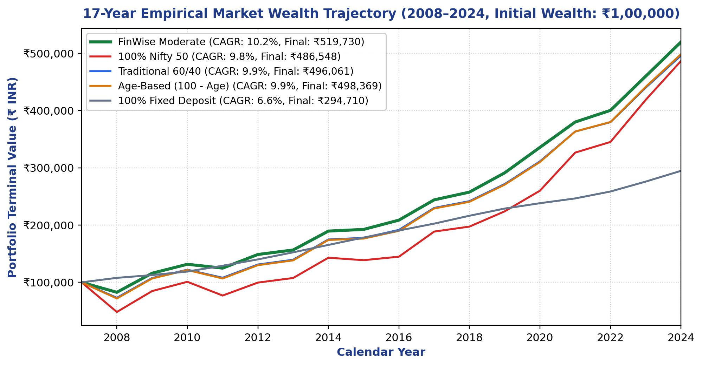
During the 2008 financial crisis, Nifty 50 suffered a -51.80% crash. In contrast, FinWise Moderate experienced only a -17.44% maximum drawdown due to positive uncorrelated returns in domestic gold (+29.5%) and government bonds (+10.2%):
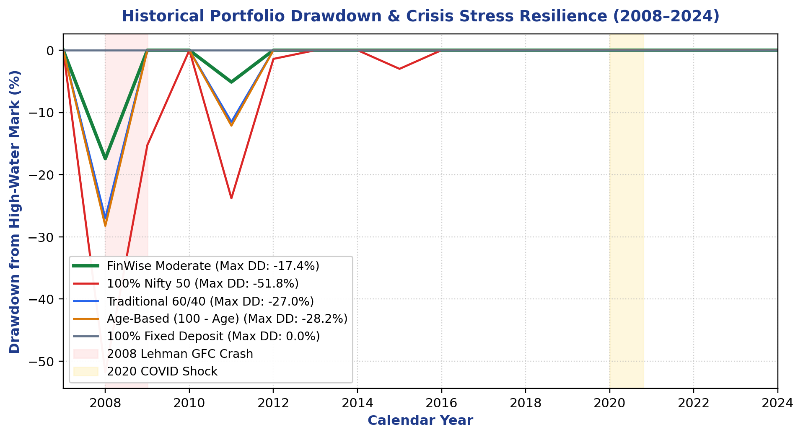
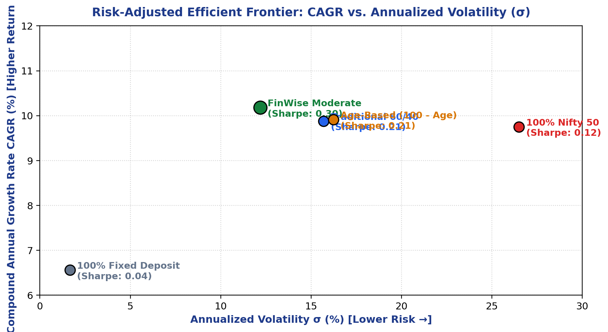
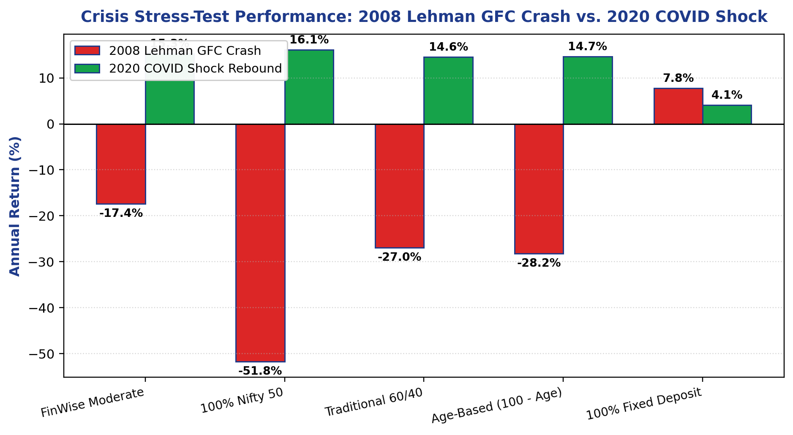
| Verification Metric | Sample Size | Observed Value | Status |
|---|---|---|---|
| State-Space Completeness | 1,296 Grid Points | 100.0% Valid (Zero Gaps) | PASS |
| Monotonicity Concordance | 4D State Space | 98.61% Consistent Gradients | PASS |
| Allocation Sum Invariant | 50,000 Monte Carlo | $\sum w_i = 100.00\%$ Exact | PASS |
| Mamdani Core (NumPy) Latency | 1,000 Iterations | 0.002 s (Average) | PASS |
| Forward Rule Engine Latency | 1,000 Iterations | 0.004 s (Average) | PASS |
In this project, our team designed, built, and evaluated FinWise AI: